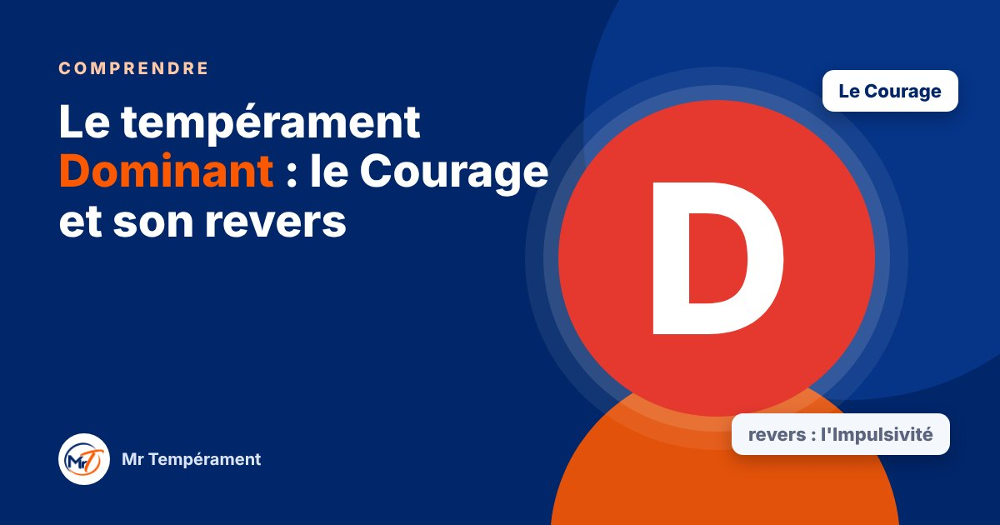

Le tempérament Dominant : le Courage et son revers

Il décide vite, il avance, il prend les responsabilités que d'autres évitent. Voici comment il fonctionne, et ce qu'il gagne à surveiller.
Dans le modèle DISC, le « D » désigne le tempérament Dominant. Si vous vous reconnaissez dans cette description, ou si vous vivez avec quelqu'un qui s'y reconnaît, cet article vous aide à voir ce qui le motive, ce qui le dessert parfois, et comment tirer le meilleur de cette énergie. Rappel utile : personne n'est un seul tempérament. Nous avons un peu des quatre, et celui-ci s'exprime simplement davantage chez certains.
Comment fonctionne le Dominant
Le Dominant est orienté vers l'action et le résultat. Face à un problème, il ne demande pas « Qui est coupable ? » mais « Que fait-on maintenant ? ». Il aime les objectifs clairs, les défis et l'autonomie. Il supporte mal les lenteurs, les discussions qui tournent en rond et les décisions qui n'en finissent pas.
Sous pression, il accélère. Il prend le contrôle, tranche et passe à l'étape suivante. C'est souvent lui que l'on appelle quand il faut que les choses se débloquent.
Son super-pouvoir : le Courage
Le Courage du Dominant, c'est d'oser. Oser lancer, oser décider, oser dire non, oser dire une vérité inconfortable. Dans une famille, une équipe ou une entreprise, il est celui qui protège, qui ouvre la voie et qui ne se laisse pas paralyser par la peur de se tromper.
Ce courage est précieux. Une équipe sans Dominant hésite longtemps. Un projet sans Dominant démarre rarement.
Son revers : l'Impulsivité
Poussé trop loin, le Courage devient de l'Impulsivité. Le Dominant décide avant d'avoir écouté, va plus vite que les autres, coupe la parole sans s'en rendre compte, et prend des risques que personne n'a eu le temps de mesurer. Il peut aussi paraître dur alors qu'il pense simplement être efficace.
Autour de lui, certains se taisent pour éviter le conflit. Le Dominant croit alors que tout va bien, alors que l'équipe ou la famille n'ose plus dire ce qu'elle pense. C'est souvent là que se joue sa plus belle marge de progression.
Au quotidien : couple, travail, argent
En couple, le Dominant protège et prend les devants, mais il peut décider à deux sans avoir vraiment demandé l'avis de l'autre. Au travail, il porte les résultats, mais il gagne à déléguer et à reconnaître le travail des autres. Avec l'argent, il saisit les occasions, mais peut sous-estimer les risques.
Ces tendances ne sont pas des défauts. Ce sont des réflexes naturels qu'on peut apprendre à orienter.
Trois gestes pour cultiver son Courage avec justesse
Le premier : poser une question avant de donner son avis. « Et toi, qu'en penses-tu vraiment ? » change la qualité d'une conversation. Le deuxième : attendre vingt-quatre heures avant les décisions importantes qui engagent d'autres personnes. Le troisième : dire merci, simplement et souvent, pour ce qui est bien fait.
Si vous vivez avec un Dominant, dites-lui les choses clairement et brièvement, allez à l'essentiel, et proposez des solutions plutôt que des plaintes. Il vous écoutera davantage.
Une carte, jamais une cage
Être Dominant n'enferme pas. Beaucoup de Dominants deviennent d'excellents écoutants quand ils décident de l'être. Un tempérament décrit une tendance naturelle, pas une limite.
Pour aller plus loin
Vous vous reconnaissez dans cet article ? Le test gratuit vous donne votre tempérament dominant en une minute, sans inscription.
Découvrir mon tempérament